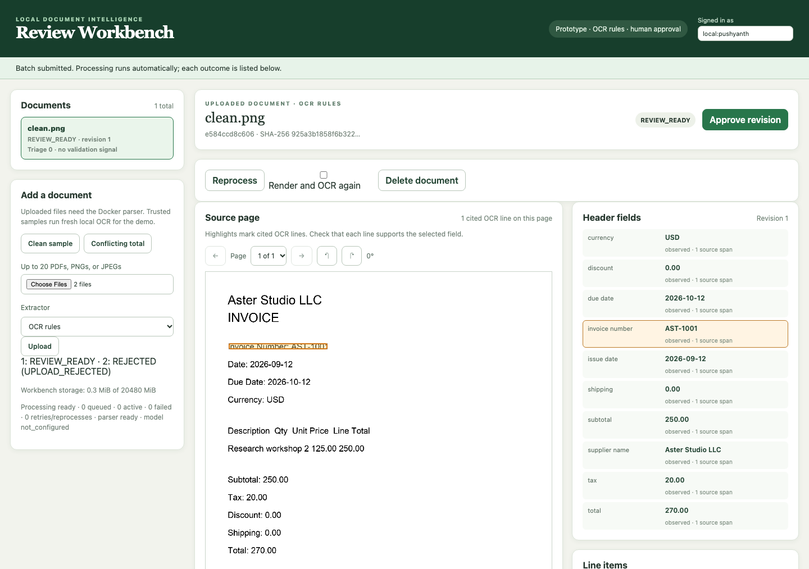

DOCUMENT INTELLIGENCE WORKBENCH · OCTOBER 4, 2026
Fresh uploads on Apple M1 / 16 GiB, through authenticated local HTTP and the serial Docker parser. Rules and the pinned local model run separately. Fictional development inputs; candidate publication does not establish correctness.
Full v1 remains pending. Genuine scanner validation, semantic source assessments, complete memory accounting and final release packaging remain open. Timing below binds the frozen pre-rebuild image; final configuration requires a timing refresh after parser build inputs are pinned.
| Profile | Workload | Ready | P50 | P95 |
|---|---|---|---|---|
| rules | cold | 3/3 | 1.758s | 1.759s |
| rules | warm | 10/10 | 1.517s | 1.541s |
| rules | queue | 20/20 | 15.145s | 34.922s |
| model | cold | 3/3 | 88.081s | 90.591s |
| model | warm | 10/10 | 65.964s | 66.785s |
Cold rows show total workflow including fresh Python/model process launch and readiness checks. OS caches and the Docker VM stay warm. Warm and queue rows show upload to observed terminal status; queue includes waiting while earlier jobs process. Polling provides an upper bound on publication time. One separately counted warmup precedes each profile's ten warm trials. Every upload has one fresh attempt, with no checkpoint reuse or retry.
| Trial | Outcome | Startup | Upload → terminal | Attempts |
|---|---|---|---|---|
| cold-0 | REVIEW_READY | 0.160s | 1.528s | 1 |
| cold-1 | REVIEW_READY | 0.163s | 1.566s | 1 |
| cold-2 | REVIEW_READY | 0.157s | 1.569s | 1 |
| warmup | REVIEW_READY | 0.000s | 1.517s | 1 |
| warm-0 | REVIEW_READY | 0.000s | 1.522s | 1 |
| warm-1 | REVIEW_READY | 0.000s | 1.507s | 1 |
| warm-2 | REVIEW_READY | 0.000s | 1.521s | 1 |
| warm-3 | REVIEW_READY | 0.000s | 1.517s | 1 |
| warm-4 | REVIEW_READY | 0.000s | 1.518s | 1 |
| warm-5 | REVIEW_READY | 0.000s | 1.514s | 1 |
| warm-6 | REVIEW_READY | 0.000s | 1.495s | 1 |
| warm-7 | REVIEW_READY | 0.000s | 1.502s | 1 |
| warm-8 | REVIEW_READY | 0.000s | 1.527s | 1 |
| warm-9 | REVIEW_READY | 0.000s | 1.541s | 1 |
| queue-0 | REVIEW_READY | 0.000s | 1.552s | 1 |
| queue-1 | REVIEW_READY | 0.000s | 3.125s | 1 |
| queue-2 | REVIEW_READY | 0.000s | 4.569s | 1 |
| queue-3 | REVIEW_READY | 0.000s | 6.303s | 1 |
| queue-4 | REVIEW_READY | 0.000s | 7.568s | 1 |
| queue-5 | REVIEW_READY | 0.000s | 9.321s | 1 |
| queue-6 | REVIEW_READY | 0.000s | 11.005s | 1 |
| queue-7 | REVIEW_READY | 0.000s | 12.374s | 1 |
| queue-8 | REVIEW_READY | 0.000s | 13.836s | 1 |
| queue-9 | REVIEW_READY | 0.000s | 15.145s | 1 |
| queue-10 | REVIEW_READY | 0.000s | 16.761s | 1 |
| queue-11 | REVIEW_READY | 0.000s | 18.258s | 1 |
| queue-12 | REVIEW_READY | 0.000s | 19.881s | 1 |
| queue-13 | REVIEW_READY | 0.000s | 21.414s | 1 |
| queue-14 | REVIEW_READY | 0.000s | 22.990s | 1 |
| queue-15 | REVIEW_READY | 0.000s | 24.649s | 1 |
| queue-16 | REVIEW_READY | 0.000s | 28.148s | 1 |
| queue-17 | REVIEW_READY | 0.000s | 31.386s | 1 |
| queue-18 | REVIEW_READY | 0.000s | 34.922s | 1 |
| queue-19 | REVIEW_READY | 0.000s | 38.479s | 1 |
| Trial | Outcome | Startup | Upload → terminal | Attempts |
|---|---|---|---|---|
| cold-0 | REVIEW_READY | 7.633s | 82.904s | 1 |
| cold-1 | REVIEW_READY | 7.110s | 80.901s | 1 |
| cold-2 | REVIEW_READY | 6.789s | 75.380s | 1 |
| warmup | REVIEW_READY | 0.000s | 77.044s | 1 |
| warm-0 | REVIEW_READY | 0.000s | 66.127s | 1 |
| warm-1 | REVIEW_READY | 0.000s | 65.986s | 1 |
| warm-2 | REVIEW_READY | 0.000s | 66.785s | 1 |
| warm-3 | REVIEW_READY | 0.000s | 65.816s | 1 |
| warm-4 | REVIEW_READY | 0.000s | 66.058s | 1 |
| warm-5 | REVIEW_READY | 0.000s | 65.964s | 1 |
| warm-6 | REVIEW_READY | 0.000s | 66.455s | 1 |
| warm-7 | REVIEW_READY | 0.000s | 65.745s | 1 |
| warm-8 | REVIEW_READY | 0.000s | 65.891s | 1 |
| warm-9 | REVIEW_READY | 0.000s | 65.826s | 1 |
The first rules run encountered 151 seconds of idle sleep. One attempt was abandoned and recovery produced the candidate; the no-retry benchmark rejected that run. The next run overlapped the test suite and remains diagnostic. The final timing run excludes tests and browser verification, inhibits idle sleep for its lifetime, and records clock divergence and competing inference.
Original failed report · Read-only sleep inspection · Overlapping diagnostic
Reviewer-authenticated endpoints separate service/storage/parser/worker readiness from optional model availability. Metrics report queue age, stages, retained failure/retry counts and timing coverage without document content, identifiers, paths, actors or credentials. Deletion removes per-document history. Operational wall-clock aggregates and elapsed review age are distinct from controlled timing and active human effort.

Scripted Chrome controls on a disposable fictional invoice. No human review-time measurement.
Ten real HTTP checks · Live lifecycle/readiness checks · Replay browser controls
Peak sampled application process-tree RSS: 61.562 MiB for rules / 63.047 MiB for model; model RSS 3.615 GiB. Docker backend RSS is about 254.6 MiB. These figures are not summed: RSS can share pages, Metal/unified-memory ownership is incomplete, and container working sets are nested within Docker memory. Some short parser lifetimes have no sample. Host pressure/headroom and Docker daemon MemTotal provide context; they do not establish attributable whole-application peaks or a configured VM cap.
Whole-application memory acceptance remains pending. Sampling limits and resource budgets are in the frozen protocol. Passing the latency objective cannot close this gap.
Evidence guide · Runbook · Release backlog · Fifteen release gates